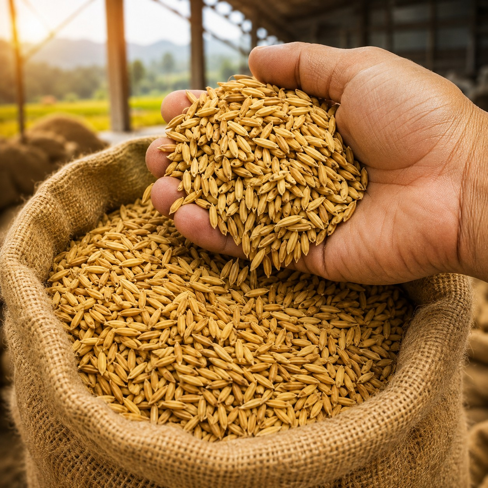

Two lots of paddy can look identical across the weighbridge and mill completely differently. TMA analyses a prepared sample and reports what that paddy is likely to deliver — in yield, in grade and in money.
A bright, clean-looking lot can carry immature grain and internal chalk that only appear as brokens after the whitener; a duller lot can mill beautifully. TMA reports the difference before the purchase order is signed — and stores it, so this season's supplier judgement is available next season.

TMA can run a quick hand-pounded control alongside a machine-milled pass on the same incoming sample, so you can see how a lot is likely to perform before committing it to the mill.
For gate-level screening where no sample mill is available. Hold the preparation method constant so lot-to-lot comparison stays valid.
Preferred where repeatability matters. A standardised mill removes preparation variance, so report differences reflect paddy differences.
Every output below is labelled by the way it is produced — estimated, AI-derived, measured or calculated — so a directly measured grain property is never confused with a decision-support estimate.
Estimates from the prepared sample — not a milling guarantee for the full lot.
Prices and quantities are entered by the mill; TMA does not source market rates.
Outputs support the buying decision; the decision remains the mill's.
Estimate the head rice and broken yield a lot will produce, before it's milled.
Spot poor-quality paddy well before it reaches the mill line.
Price every lot against measured quality, not a visual estimate.
Fewer poor-yielding purchases, protecting margin at the source.
Decide the right milling process for each lot based on its predicted outcome.
Track pricing across every co-product, not just the finished grain.
A full, connected record of what was paid, for what quality, lot by lot.
Know the likely split between head rice and brokens before you commit to a purchase.
The operator enters the region, variety, and lot details for the incoming sample — guided step by step, with voice narration available in the operator's own language.
The sample is imaged grain by grain. TMA classifies each grain in real time as the trial runs.
Accepted / rejected / foreign-matter percentages, grain dimensions and a full trial-by-trial breakdown are ready immediately — and feed straight into Reports & Analytics for trend tracking over time.
All yield and economic outputs on this page are labelled estimated, predicted or calculated — decision-support figures produced from a prepared sample and user-entered commercial data. They are not a milling guarantee, a certified analysis or a warranted return on investment.
From a single weighbridge to a multi-gate mill, TMA scales to how your paddy actually arrives.